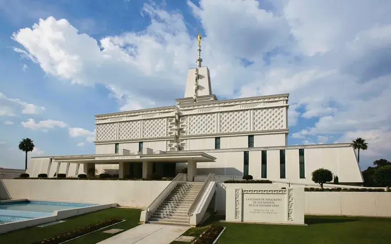
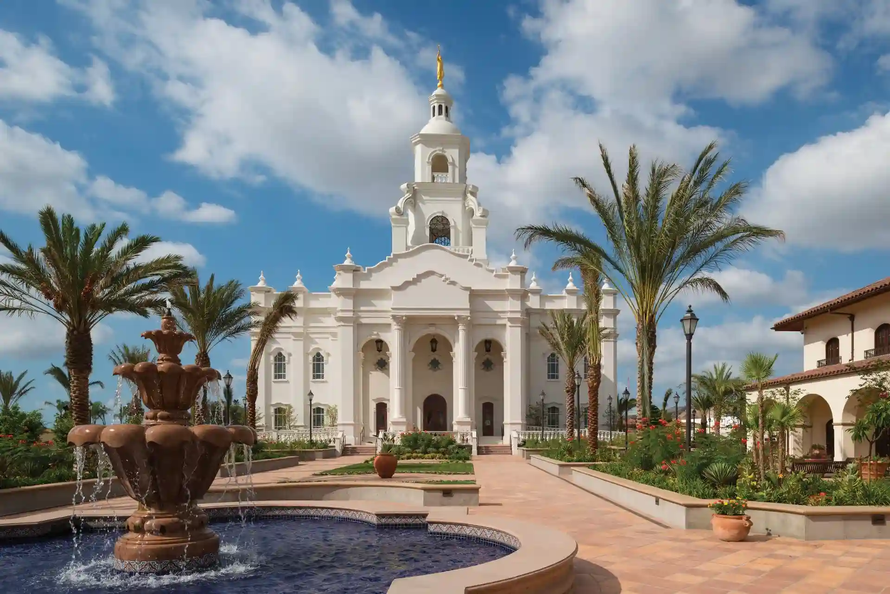
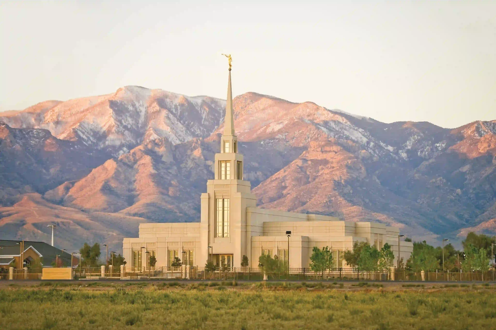
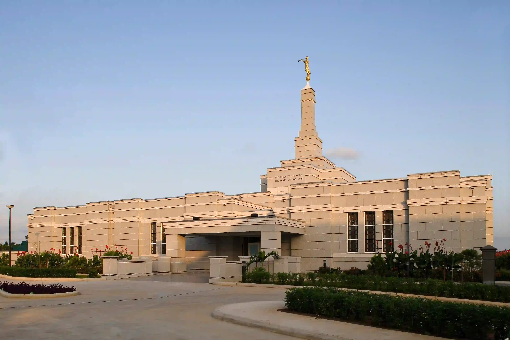

☰
Temple Album
Home
Old
New
Large
Small

Temple Mexico City

Temple Tijuana, Mexico

Temple Gila Valley, Arizona

Temple Aba Nigeria
Temple Cardston, Alberta
Temple Panama City
Temple Cordoba, Argentina
Temple Denver, Colorado
Temple Hong Kong